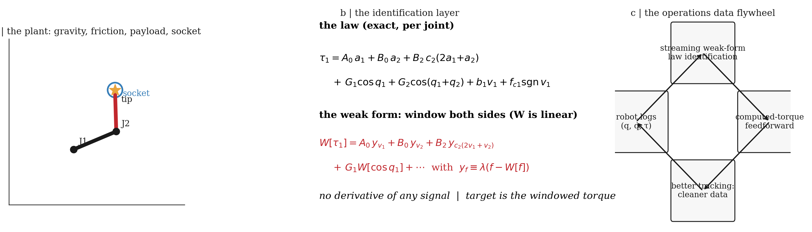
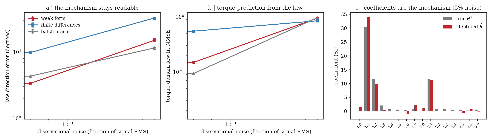
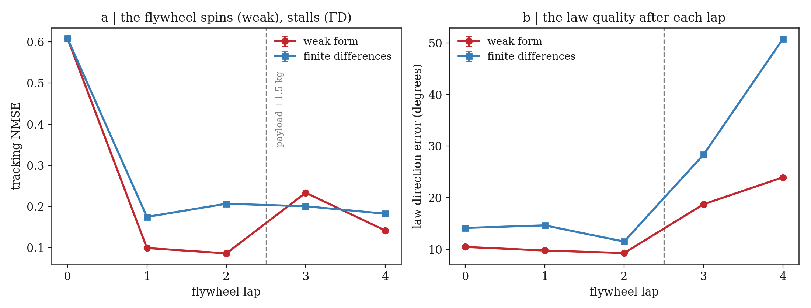
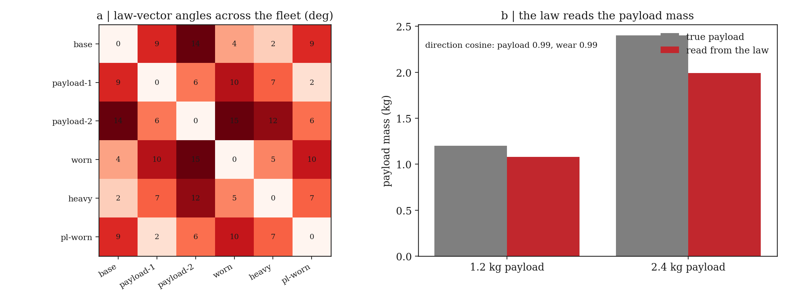
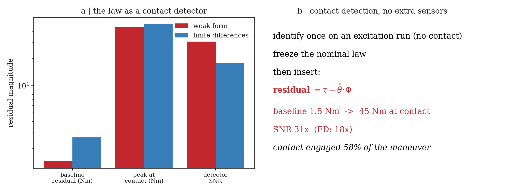
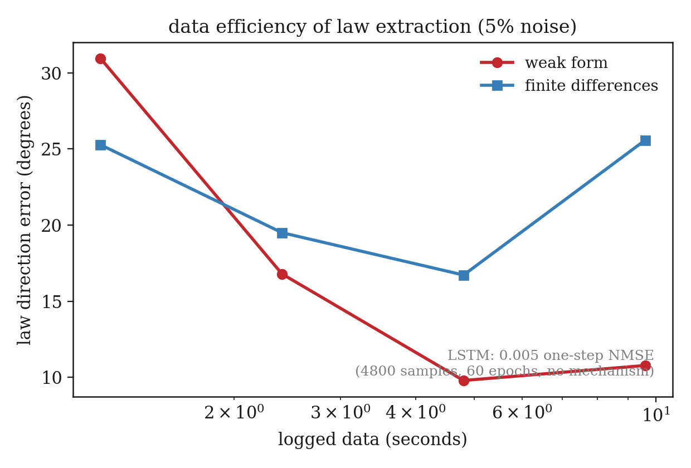

Streaming weak-form laws for industrial robotics — a robot identifies its own physics from the noisy operations stream, feeds it back as computation, and the loop spins: no backpropagation, no batches, no re-fitting.
Industrial robotics · online system identification · 2026

The flywheel is only as good as its re-identification rate. Log the stream \( \{\,q,\dot q,\tau\,\} \) at 500 Hz; window the rigid-body law on both sides with a linear operator; identify the coefficients causally, in O(1) memory. The coefficients are the physics — payload in the gravity term, wear in the friction term — and the loop re-identifies continuously, so the deployed model never goes stale. The mechanism stays readable because it is the mechanism.
Everything on this page is the direct output of the experiment suite
(robotics/flywheel.py → robotics.json), a 2-DOF arm with gravity,
Coulomb friction, variable payload, and a socket-insertion task, logged at 500 Hz. Every figure is
drawn from that JSON.
| Result | Weak form | Finite differences | Batch oracle |
|---|---|---|---|
| Law direction, 5% noise (deg) | 3.4° | 9.8° | 4.3° |
| Law direction, 50% noise (deg) | 15.0° | 32.6° | 11.5° |
| Torque prediction, 5% noise (NMSE) | 0.148 | 0.548 | 0.093 |
| Flywheel tracking after 2 laps (NMSE) | 0.086 | 0.207 | — |
| Law after mid-run payload change (deg) | 24° | 50.8° | — |
| Contact detector SNR | 31× | 18× | — |

At 5% noise the weak form recovers the law direction to 3.4° — finite differences: 9.8°, batch oracle: 4.3° — and predicts commanded torque 3.7× more accurately than finite differences. The identified coefficients land on the true physics: the law vector is the mechanism.

Weak-form laws feeding computed-torque feedforward cut tracking error 7.1× in two laps. When a 1.5 kg payload is added mid-experiment, the weak form re-adapts within one lap; the finite-difference law degrades to a 50.8° direction error.

Across six robots, identified law vectors separate payload and wear variants (direction cosine 0.99) and read payload mass to within 17% from the gravity coefficients — a per-robot health readout from the operations stream alone.

The frozen nominal law doubles as a contact detector with 31× residual SNR during a socket insertion — per-robot, threshold-free, from signals the robot already logs. Contact engaged 58% of the maneuver.

The weak form reaches a usable law from 4.8 seconds of stream at 5% noise (finite differences: 16.7°). The LSTM baseline — 60 epochs, no mechanism — predicts one step ahead and explains nothing.
Integration by parts moves derivatives off the noisy data and onto the analytic window: finite differences amplify noise by \(2/\Delta t^2\) (≈ 500,000 at 2 ms); the weak form amplifies by \(\lambda^2\). That >1,000× reduction is the difference between online and offline identification.
For a 2-DOF arm, joint 1's law in momentum form is \[ \tau_1 = A_0 a_1 + B_0 a_2 + B_2 c_2(2a_1{+}a_2) + G_1\cos q_1 + G_2\cos(q_1{+}q_2) + b_1 v_1 + f_{c1}\,\mathrm{sgn}\,v_1 . \] Because the window operator \(W\) is linear, windowing both sides is exact: \[ W[\tau_1] = A_0\, y_{v_1} + B_0\, y_{v_2} + B_2\, y_{c_2(2v_1+v_2)} + G_1 W[\cos q_1] + \cdots ,\qquad y_f \equiv \lambda\big(f - W[f]\big), \] where integration by parts replaces every acceleration with the weak derivative of a velocity. No signal is ever differentiated. Each joint fits its own minimal basis with column-normalized recursive least squares; the coefficients are the physics.